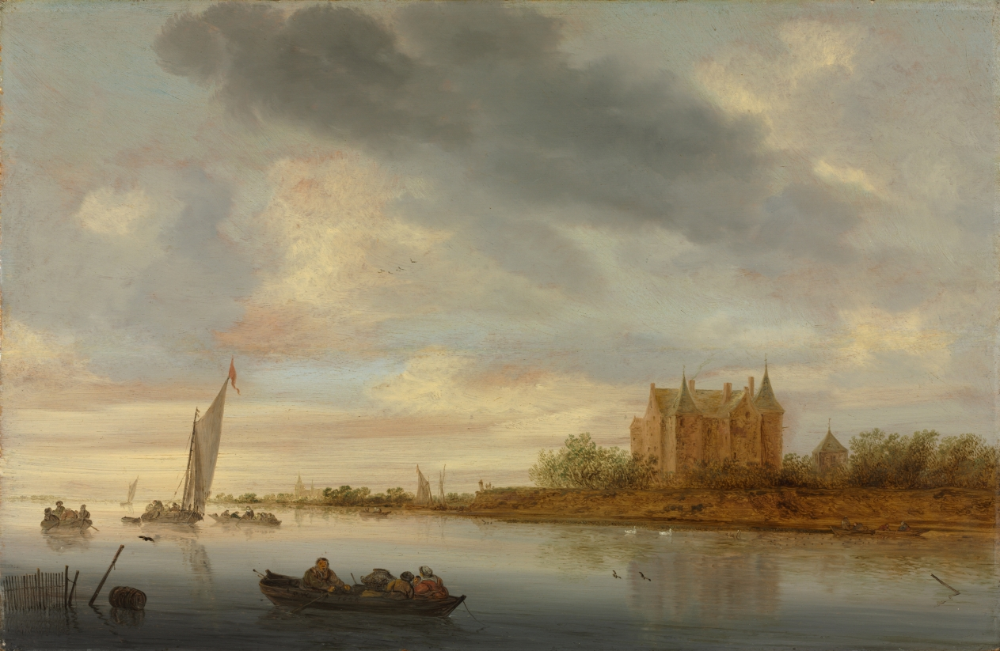

Castle on a River

Salomon van Ruysdael, Castle on a River, 1644. Cleveland Museum of Art, 1973.2, CC0. Museum's open-access image.
Eight lines. Paul Oppenheimer of Littleborough, Lancashire. M. B. Asscher, London, 1946. J. Singer, London, 1948. Leonard Koetser, London, 1962 to 1967. E. Speelman. A Sotheby’s sale in London on March 24, 1971, lot 104. Bruno Meissner, Zurich. Schaeffer Galleries, New York, 1972, sold to the museum in 1973. Dealers and sales in brackets, owners bare. Nothing in it argues with anything else.
What I could test from here: the museum’s own exhibition list puts the painting in Koetser’s spring shows of 1962 and 1967, which matches the 1962–1967 in the provenance; the museum’s 1973 acquisition year matches the museum’s 1973 show of it; and an outside search finds that Koetser did hold a “1962 Spring exhibition of Flemish, Dutch and Italian old masters.” The exhibition lines spell the gallery “Koester”; the provenance and the gallery’s own name say Koetser. That is the only mismatch I found, and it is a spelling.
What I could not test: Oppenheimer, Asscher, Singer, Speelman and Meissner, whom I found nothing about; the 1971 sale, which no search I ran surfaced; and the order of the first three owners, which nothing I have can confirm. A chain like this can be consistent with everything reachable and still be a sentence only the museum’s files can finish. For the Church painting, the footnotes were the part I could weigh. Here there are none, and the agreement I am left with is the absence of anything to hold against it.
I’d call that finding agreement only in a narrow sense: I looked for a place it breaks and didn’t find one, with most of the looking out of reach.
← a7